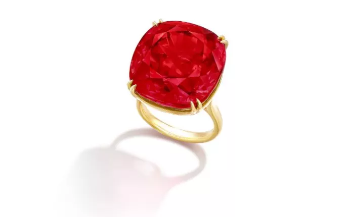
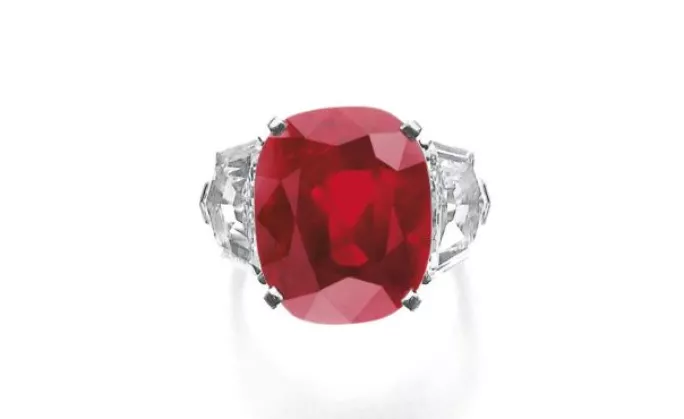
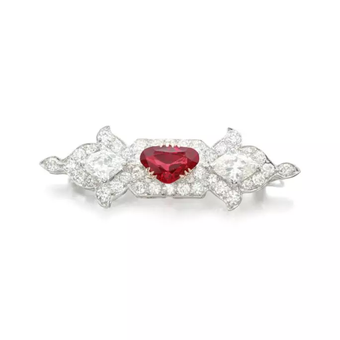
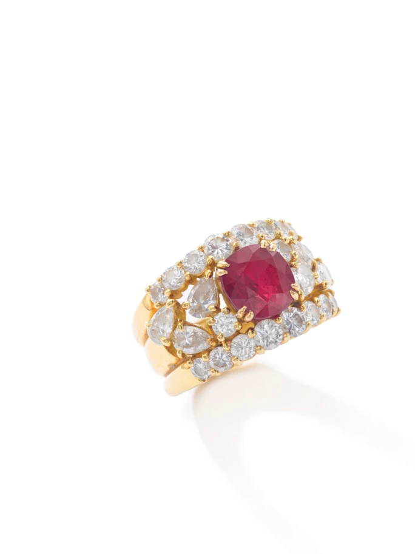

譯自 Lydia Dokko · Sotheby's
深入探索世上最珍罕非凡的紅寶石戒指
紅寶石何以珍貴
紅寶石乃最稀有的寶石之一，其發現可追溯至兩千多年前。紅寶石的硬度僅次於鑽石，由剛玉及微量鉻元素構成。在古梵文中，紅寶石被譽為「Ratnaraj」，意即「寶石之王」。古代戰士佩戴紅寶石以求護佑，皇室則藉此彰顯威儀。歐洲王室貴冑世代珍之，視為珠寶臻品。中世紀的歐洲人相信佩戴紅寶石能蔭福佑壽、招財納祥、啟智增慧，更能促成美滿良緣。時至今日，紅寶石因其稀罕天性、如火似血之色澤，以及作為帝王瑰寶的悠久傳承，依舊深受藏家珍視。紅色寓意祥瑞、喜慶與福澤，因此紅寶石在亞洲藏家中尤受青睞。梵克雅寶（Van Cleef & Arpels）、卡地亞（Cartier）、寶格麗（Bulgari）與海瑞溫斯頓（Harry Winston）等高級珠寶品牌，皆以珍稀紅寶石鑄就非凡之作。
最具價值的紅寶石未經加熱處理，主要產自緬甸及莫桑比克。隨著緬甸及諸多產地的碩大紅寶石礦藏日漸匱乏，凡發現逾 5 克拉的紅寶石，均足令寶石鑑賞家欣喜若狂。品鑒紅寶石，色澤為首要之論，猶如鑽石，淨度、切工與重量亦是關鍵考量。色澤鮮艷且內質晶瑩的紅寶石最受藏家青睞。「鴿血紅」紅寶石因其如鴿之血般醇厚紅豔、晶瑩剔透且幾無瑕疵，被譽為紅寶石中的天之驕子。此雅稱源自珠寶業界在考量其淨度、通透性及色彩勻稱等諸多品相後，用以形容那些色澤濃豔、天然未經加熱處理且品質超凡的紅寶石。蘇富比拍場上最令人驚艷的紅寶石戒指無一不是天然瑰寶，且皆被譽為「鴿血紅」之至美顏色。
四大無雙紅寶石戒指

「Estrela de FURA」：55.22 克拉紅寶石
1.「Estrela de FURA」｜3,480 萬美元
蘇富比拍賣史上最巨碩且最珍貴的紅寶石戒指當屬「Estrela de FURA」。此稀世珍品重達 55.22 克拉，於 2023 年以天價 3,480 萬美元易主。這顆「鴿血紅」天然未經加熱處理的紅寶石出自莫桑比克。「FURA」為全球發展最迅速的彩色寶石礦業公司，於 2022 年發現此瑰寶。原石璀璨通透，色澤如火，重達 101 克拉，乃有史以來發現的最大寶石級紅寶石。經專家團隊審視後，交由切割大師 Chirapat 在曼谷精雕細琢，蛻變為 55.22 克拉的枕形瑰寶，璀璨奪目。

卡地亞紅寶石戒指，25.59 克拉枕形紅寶石
2.「Sunrise Ruby」｜3,090 萬美元
卡地亞匠心打造的「Sunrise Ruby」於 2015 年以 2,825 萬瑞士法郎成交。此枕形紅寶石重 25.59 克拉，天然未經加熱處理，產自緬甸。
「此 25.59 克拉紅寶石依所附有的古寶琳寶石鑒定所（Gübelin）報告所述，集諸多非凡特質於一身。它呈現均勻且高度飽和的『鴿血紅』色調，彰顯此類寶石的至高品質。其色澤之深邃，結合無與倫比的淨度與光彩，共同成就了此寶的無上風華。其形狀與比例完美的切工創造出耀眼奪目的內部光影交織。更難得者，此稀世珍品未經任何加熱處理。」—— 摘自古寶琳寶石鑒定所附錄信函，2015 年 2 月 11 日

紅寶石戒指，24.70 克拉
3. 紅寶石鑽石戒指｜1,120 萬美元
一枚 24.70 克拉紅寶石鑽石戒指於 2018 年以 86,392,500 港元成交。此紅寶石產自緬甸，天然未經加熱處理。瑞士珠寶研究院（SSEF）進一步證實，此寶石的色澤堪稱業界珍視的「鴿血紅」。其碩大尺寸與濃艷欲滴的紅色彰顯了緬甸天然紅寶石的稀世風采。紅寶石周圍環繞著 16 顆梨形鑽石，重量介於 1.07 至 1.73 克拉不等，均為 D 色至臻，無瑕至內部無瑕之極品。

「Graff Ruby」
4.「Graff Ruby」｜900 萬美元
「Graff Ruby」於 2014 年以 829 萬瑞士法郎成交。此 8.62 克拉緬甸瑰寶天然未經加熱處理，珍貴非凡。根據 SSEF 鑒定，此寶石具中強度飽和度及「鴿血」般豔麗紅彩。此紅寶石晶體光華內蘊，純淨如一，色澤絕倫。勞倫斯·格拉夫（Laurence Graff）於 2005 年慧眼識珠，將其納入囊中，並以己姓命名為「Graff Ruby」。他在 2006 年曾言：「這顆寶石的切工與色彩流轉，乃是我一生所見之極致。」